Статистическая визуализация данных: 6 ключевых категорий графиков, сетки и реальные примеры
Seaborn — высокоуровневая статистическая библиотека поверх Matplotlib, оптимизированная под работу с датафреймами pandas. Она позволяет строить информативные графики в одну строку, но при этом возвращает обычные объекты Matplotlib, которые можно донастроить.
import seaborn as sns
import matplotlib.pyplot as plt
# Данные в «длинном» формате: одна строка — одно наблюдение
df = sns.load_dataset("tips") # пример; можно pd.read_csv("tips.csv")
# Базовая схема:
sns.scatterplot(
data=df,
x="total_bill", # имя колонки по оси X
y="tip", # имя колонки по оси Y
hue="sex", # цвет по категории
palette="Set2" # палитра
)
plt.show()Перед вызовом функций Seaborn размер и качество изображения настраиваются через Matplotlib: plt.figure(figsize=(10, 5), dpi=150). Для «фигурных» функций (displot, catplot, jointplot, pairplot) размер задаётся параметрами height и aspect.
| Тип | Примеры | Как работает |
|---|---|---|
| Axes-level | scatterplot, histplot, kdeplot, boxplot, barplot, heatmap |
Рисует на конкретных осях. Принимает ax=, легко комбинируется в subplots. Размер задаётся через plt.figure(figsize=...). |
| Figure-level | displot, catplot, relplot, jointplot, pairplot, clustermap |
Создаёт собственную фигуру и сетку. Управляется через height, aspect, row, col. Сохраняется через g.savefig(). |
data=, а имена колонок — строками в x=, y=, hue= и т. д. Это позволяет не писать df["total_bill"] вручную и автоматически строить легенды.
Используются для отображения взаимосвязи между двумя непрерывными числовыми переменными. Третья и четвёртая переменные могут кодироваться цветом, формой и размером точек.
sns.scatterplot(
data=df,
x="total_bill", y="tip",
hue="sex", # цвет по категории (автолегенда)
style="time", # форма маркера по категории
size="size", # размер точки по числовой колонке
sizes=(25, 170), # диапазон размеров (мин, макс) в точках²
palette="Set2", # палитра: 'viridis', 'coolwarm', 'Set2'
alpha=0.85, # прозрачность: помогает при наложении
edgecolor="white", # контур точек
linewidth=0.6
)
plt.savefig("scatter.png", bbox_inches="tight")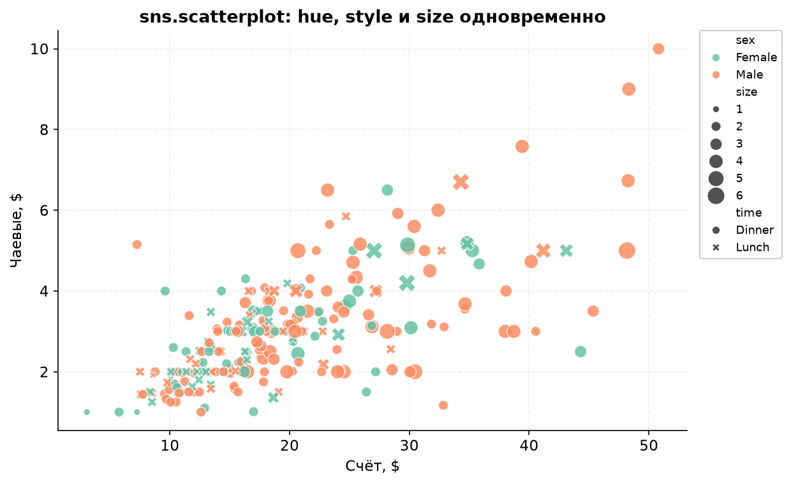
scatterplot кодирует сразу четыре переменные: счёт, чаевые, пол (цвет), время (форма) и размер компании (размер точки).scatterplot| Параметр | Что делает |
|---|---|
x, y | Имена числовых колонок или массивы значений. |
hue | Цветовая дифференциация по категориальной или числовой колонке. Автоматически добавляет легенду. |
style | Форма маркеров по категории. Полезно, если график будут смотреть в чёрно-белом виде. |
size | Размер точек по числовой колонке. Не путать с s — абсолютным размером. |
s | Базовый размер всех точек, если size не задан. |
sizes | Кортеж (min, max) для отображения диапазона size. |
palette | Палитра: качественная ("Set2"), непрерывная ("viridis", "magma") или расходящаяся ("coolwarm"). |
hue_order, style_order | Явный порядок категорий в легенде. |
alpha, edgecolor, linewidth | Прозрачность, цвет и толщина контура точек. |
legend | "auto", "brief", "full" или False — насколько подробной будет легенда. |
alpha, маленький размер, edgecolor="white", а для очень больших данных — sns.kdeplot(x=..., y=..., fill=True) или sns.histplot(x=..., y=..., bins=...).
Отображают плотность и характер распределения непрерывной числовой величины: где центр, насколько широк разброс, есть ли второй пик и выбросы.
sns.rugplot(data=df, x="total_bill", height=0.08, color="black")bins) и считает число наблюдений в каждом:
sns.histplot(data=df, x="total_bill", bins=30, kde=True)
sns.displot(data=df, x="total_bill", bins=30, kde=True, rug=True)displot — «фигурная» версия, умеет фасеты через row/col.
sns.kdeplot(
data=df, x="total_bill",
fill=True, # заливка под кривой
bw_adjust=0.5, # меньше — изрезаннее, больше — глаже
clip=(0, 60) # ограничить область построения
)h.
sns.kdeplot(data=df, x="total_bill", y="tip", fill=True, levels=9, thresh=0.03)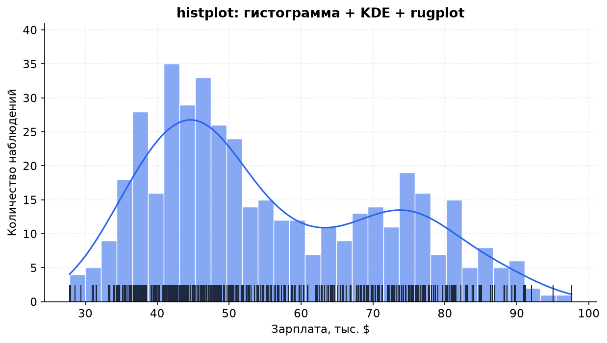
bw_adjustЗдесь n — число наблюдений, h — ширина окна (bandwidth), K — ядро (обычно гауссово). Вокруг каждой точки xi строится «колокол», а потом они складываются. Чем больше h, тем глаже кривая; чем меньше — тем больше случайных зубцов.
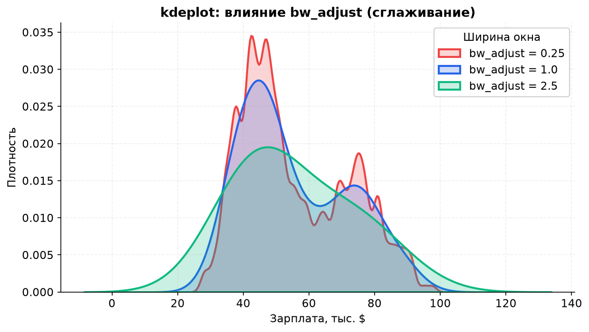
bw_adjust = 0.25, 1.0 и 2.5. Слишком маленькое значение показывает шум, слишком большое — скрывает структуру.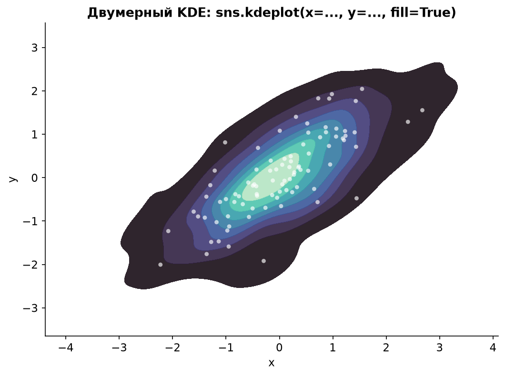
| Параметр | Где используется | Смысл |
|---|---|---|
bins | histplot, displot | Число корзин или их границы. Слишком мало — теряется структура, слишком много — шум. |
stat | histplot | Что считать: "count", "density", "probability", "percent". |
kde | histplot, displot | True — добавить KDE-кривую поверх гистограммы. |
rug | displot, rugplot | Показать отдельные наблюдения чёрточками. В histplot для этого вызывают sns.rugplot(..., ax=ax). |
bw_adjust | kdeplot, violinplot | Множитель ширины окна. Больше — глаже, меньше — детальнее. |
fill | kdeplot | Заливка под кривой. Старый параметр shade=True устарел — используйте fill=True. |
clip | kdeplot | Ограничивает область построения, например clip=(0, 60). |
common_norm | kdeplot с hue | True — нормировать все группы вместе; False — каждую отдельно. |
levels, thresh | 2D KDE | Число уровней плотности и порог отсечения самых разреженных областей. |
# Подсчёт количества наблюдений по группам
sns.countplot(data=df, x="day", hue="sex", palette="Set2")
# Столбчатая диаграмма с вычислением статистической метрики
import numpy as np
sns.barplot(
data=df,
x="day", y="total_bill",
estimator=np.mean, # функция агрегации: mean, median, sum, std
errorbar="sd", # разброс: 'sd' (±1 σ), ('sd', 2), 'se', ('ci', 95), None
hue="sex",
palette="Set2"
)
plt.legend(bbox_to_anchor=(1.02, 1), loc="upper left") # легенда снаружи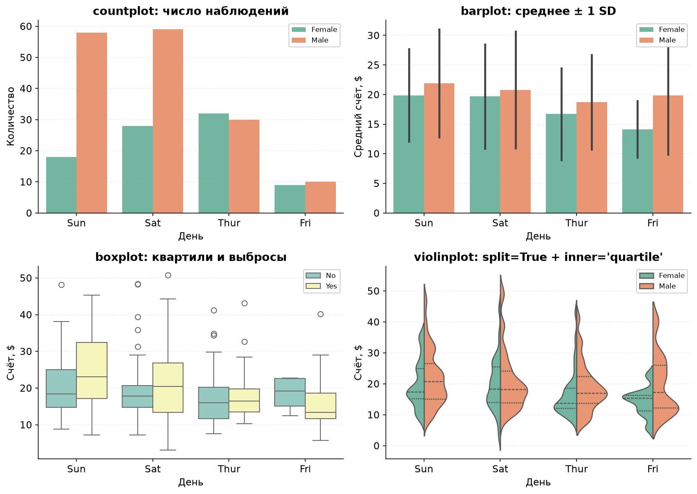
ci=95 и scale="area". В актуальных версиях вместо них — errorbar=("ci", 95) и density_norm="area". Если код из туториала выдаёт FutureWarning, скорее всего, дело в этом.
Разделяет числовой ряд на квартили: медиана Q2 (50%), ящик от Q1 (25%) до Q3 (75%). Межквартильный размах:
Точки за усами считаются выбросами. Важно: это не «ошибки», а просто значения, которые далеко отстоят от основной массы.
sns.boxplot(
data=df, x="day", y="total_bill",
hue="smoker",
whis=1.5, # правило усов
showfliers=True, # показывать выбросы
width=0.6
)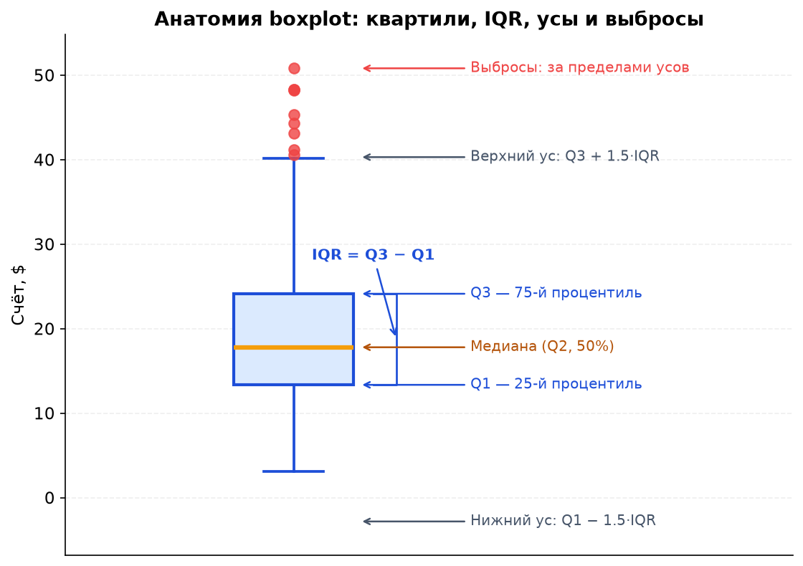
Q1, медиана, Q3, IQR, усы и выбросы.Симметричное зеркальное отображение KDE-плотности. Показывает не только квартили, но и форму распределения — например, второй пик.
sns.violinplot(
data=df, x="day", y="total_bill",
hue="sex",
split=True, # две половины для двух подкатегорий
inner="quartile", # линии квартилей внутри
bw_adjust=0.5, # сглаживание
density_norm="area" # нормировка ширины
)sns.swarmplot(
data=df, x="day", y="total_bill",
hue="sex", dodge=True, size=3.5
)
sns.boxenplot(
data=df, x="day", y="total_bill",
hue="smoker"
)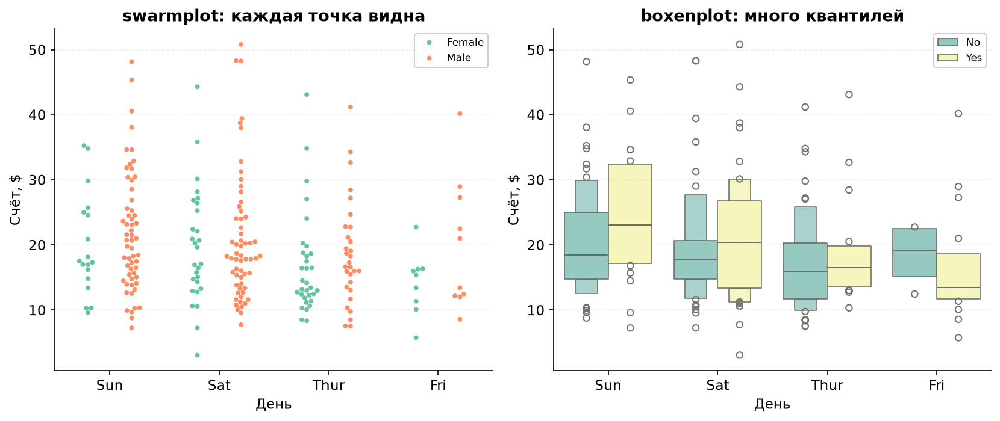
swarmplot показывает каждое наблюдение, справа boxenplot — множество квантилей.| Параметр | Что делает |
|---|---|
estimator | Функция агрегации для barplot: np.mean, np.median, np.sum, len. |
errorbar | Что рисовать вместо столбика ошибки: "sd", "se", ("ci", 95), ("pi", 95) или None. |
order, hue_order | Порядок категорий на оси и в легенде. |
dodge | True — раздвигать группы при hue, чтобы столбцы/точки не перекрывались. |
width | Ширина столбцов или ящиков. |
whis | Правило усов в boxplot: по умолчанию 1.5 IQR. |
showfliers, fliersize | Показывать ли выбросы и какого они размера. |
inner | Что рисовать внутри скрипки: "box", "quartile", "point", "stick" или None. |
split | Разделить скрипку на две половины для двух уровней hue. |
density_norm | Как нормировать ширину скрипки: "area", "count", "width". |
jointplot()Совмещает двумерный график зависимости по центру и маргинальные одномерные распределения вдоль осей. Отличный способ посмотреть связь двух переменных и их распределения одновременно.
g = sns.jointplot(
data=df, x="total_bill", y="tip",
kind="scatter", # 'scatter', 'kde', 'hex', 'hist', 'reg', 'resid'
hue="sex",
palette="Set2",
alpha=0.7,
height=6, # размер фигуры в дюймах
ratio=4, # соотношение центральной и маргинальной панелей
space=0.25, # отступ между панелями
marginal_kws=dict(alpha=0.4)
)
g.ax_joint.set_xlim(0, 60) # доступ к центральным осям
g.savefig("joint.png", bbox_inches="tight")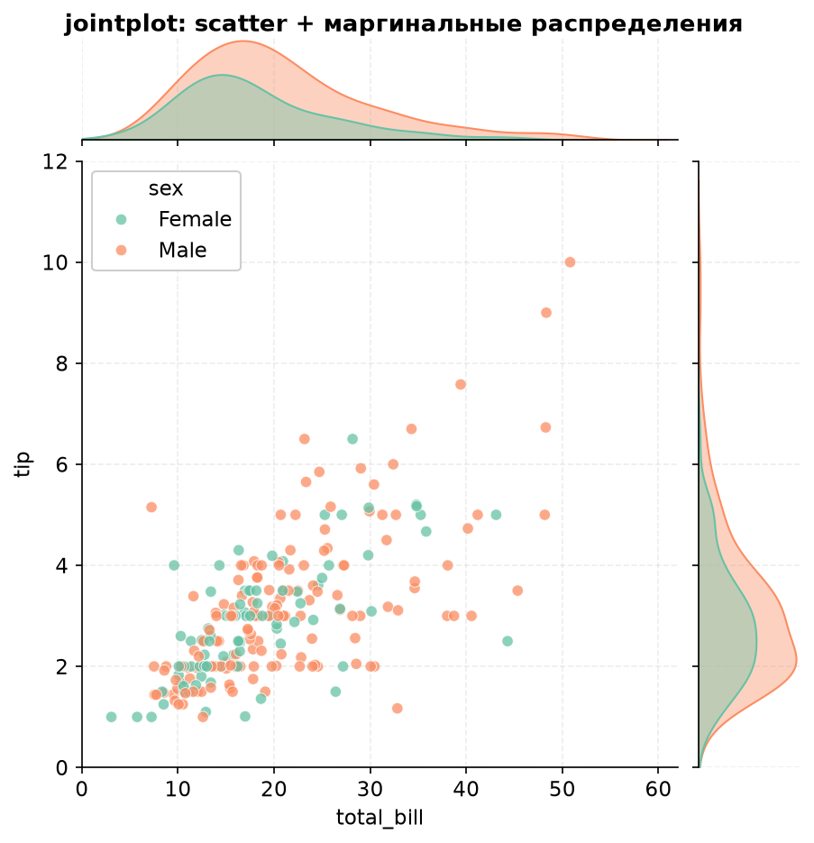
jointplot: в центре — scatter, сверху и справа — распределения переменных. hue разделяет и точки, и маргинальные кривые.pairplot()Автоматически строит матрицу парных взаимосвязей для всех числовых колонок датафрейма. По диагонали — распределения, вне диагонали — scatter или KDE.
g = sns.pairplot(
data=iris,
hue="species",
corner=True, # убрать дублирующий верхний треугольник
diag_kind="kde", # 'hist' или 'kde' на диагонали
kind="scatter", # 'scatter' или 'reg'
plot_kws=dict(s=25, alpha=0.7),
diag_kws=dict(fill=True, alpha=0.45),
height=1.8, # размер каждой панели
aspect=1
)
g.savefig("pairplot.png", bbox_inches="tight")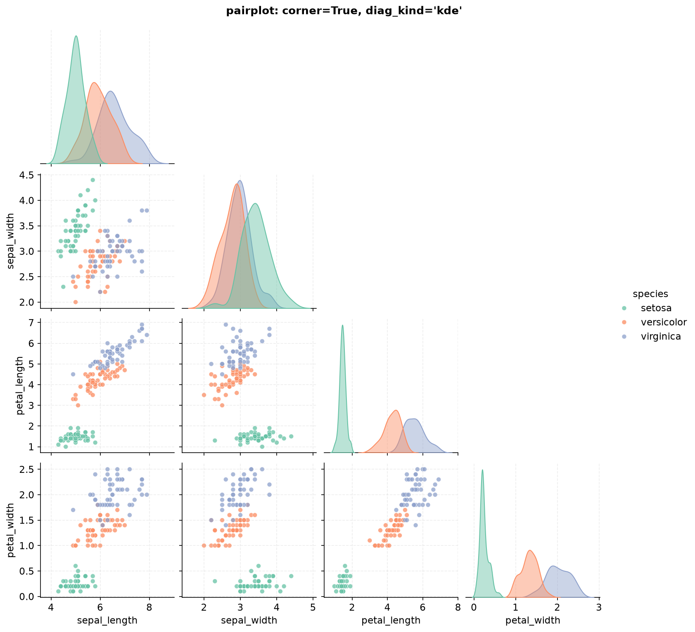
pairplot с corner=True: верхний треугольник намеренно скрыт, чтобы не дублировать те же пары переменных. Цвет — вид ириса.| Параметр | Где | Смысл |
|---|---|---|
kind | jointplot, pairplot | Тип центрального графика. Для jointplot: "scatter", "kde", "hex", "hist", "reg", "resid". |
height, aspect | figure-level | Высота каждой панели в дюймах и соотношение сторон. |
ratio, space | jointplot | Соотношение размеров центральной и маргинальной панелей и отступ между ними. |
corner | pairplot | True — оставить только нижний треугольник матрицы. |
diag_kind | pairplot | "hist" или "kde" — что рисовать на диагонали. |
vars | pairplot | Список колонок, если не нужны все числовые признаки. |
plot_kws, diag_kws | pairplot | Словари с настройками для обычных панелей и диагонали. |
marginal_kws | jointplot | Настройки маргинальных распределений: bins, fill, alpha. |
Позволяют разделять построение графиков на сетку подграфиков по категориальным признакам. Это удобно, когда нужно сравнить один и тот же график в разных подгруппах.
# 1. catplot: автоматическое фасетирование категориальных графиков
g = sns.catplot(
data=df, x="day", y="total_bill",
kind="box", # 'box', 'violin', 'bar', 'count', 'point', 'strip', 'swarm'
row="smoker", # разделение по строкам подграфиков
col="time", # разделение по колонкам подграфиков
height=3.2, # высота каждой панели
aspect=1.15, # ширина / высота
margin_titles=True,
palette="Set3"
)
g.savefig("catplot.png", bbox_inches="tight")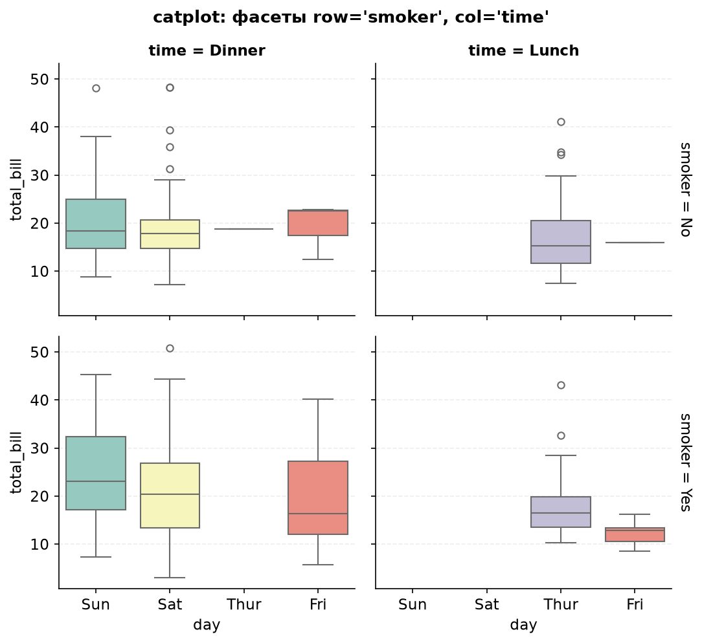
catplot строит сетку 2 × 2: строки — курящие/некурящие, столбцы — обед/ужин.# 2. PairGrid: кастомная настройка попарных сеток
g = sns.PairGrid(data=iris, hue="species", palette="Set2")
g.map_upper(sns.scatterplot, s=20, alpha=0.7) # верхний треугольник
g.map_diag(sns.kdeplot, fill=True, alpha=0.45) # главная диагональ
g.map_lower(sns.kdeplot, fill=True, alpha=0.4) # нижний треугольник
g.add_legend(title="species")
g.savefig("pairgrid.png", bbox_inches="tight")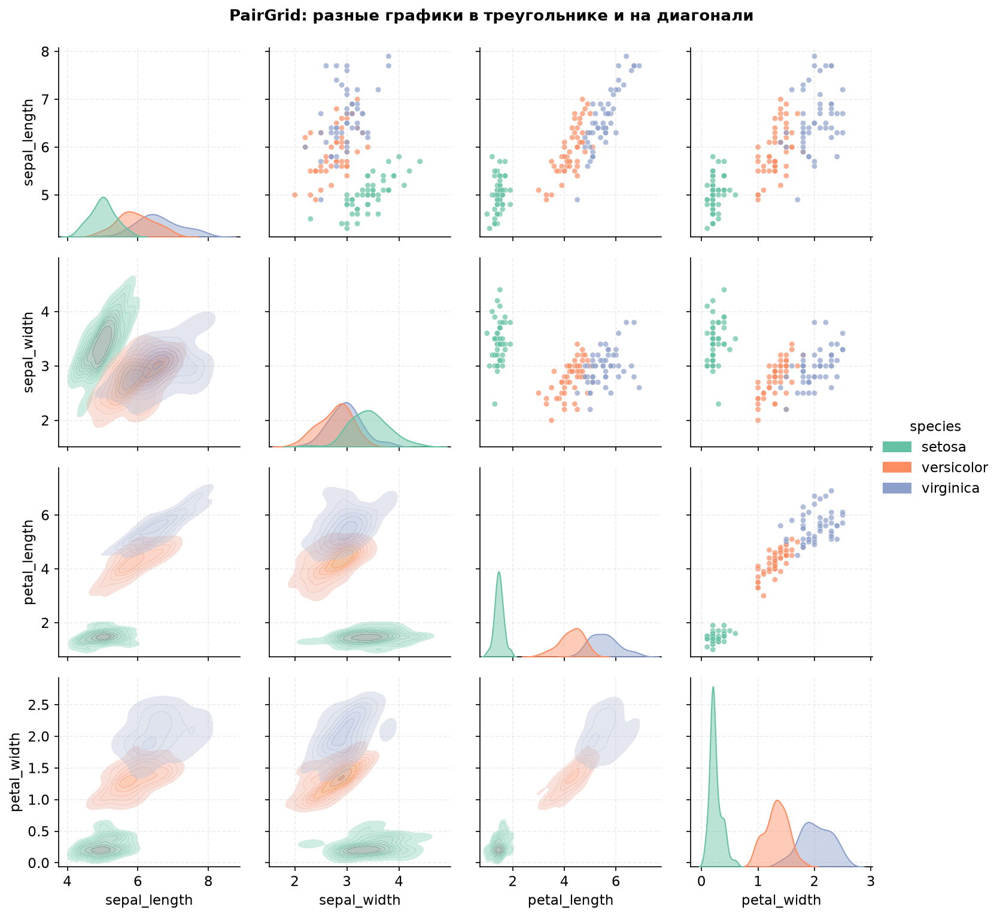
PairGrid позволяет задать свой тип графика для каждой части матрицы: scatter сверху, KDE снизу и на диагонали.| Задача | Инструмент |
|---|---|
| Один график на готовых осях | sns.boxplot(..., ax=ax) |
| Сетка по одной категории | sns.catplot(..., col="...") или FacetGrid |
| Сетка по двум категориям | sns.catplot(..., row="...", col="...") |
| Матрица попарных связей | sns.pairplot или PairGrid |
| Своя сетка из произвольных графиков | FacetGrid + map_dataframe |
# FacetGrid — низкоуровневая основа для своих сеток
g = sns.FacetGrid(df, col="time", row="smoker", height=3.2, aspect=1.1)
g.map_dataframe(sns.scatterplot, x="total_bill", y="tip", alpha=0.7)
g.set_axis_labels("Счёт, $", "Чаевые, $")
g.add_legend()catplot, pairplot, jointplot и PairGrid есть метод g.savefig(). Не вызывайте plt.savefig() после них «наугад»: активная фигура может быть не той, которую вы ожидаете.
Визуальный аналог сводных таблиц (pivot tables) и корреляционных матриц. Цвет ячейки кодирует число, поэтому такие графики хороши для быстрого поиска закономерностей.
# Предварительно вычисляем корреляцию:
corr = iris.drop(columns="species").corr()
sns.heatmap(
data=corr,
annot=True, # числа внутри ячеек
fmt=".2f", # формат чисел
cmap="coolwarm", # палитра
center=0, # центр расходящейся палитры
vmin=-1, vmax=1, # фиксированный диапазон
linewidths=0.5, # линии между ячейками
square=True, # квадратные ячейки
cbar_kws={"shrink": 0.8}
)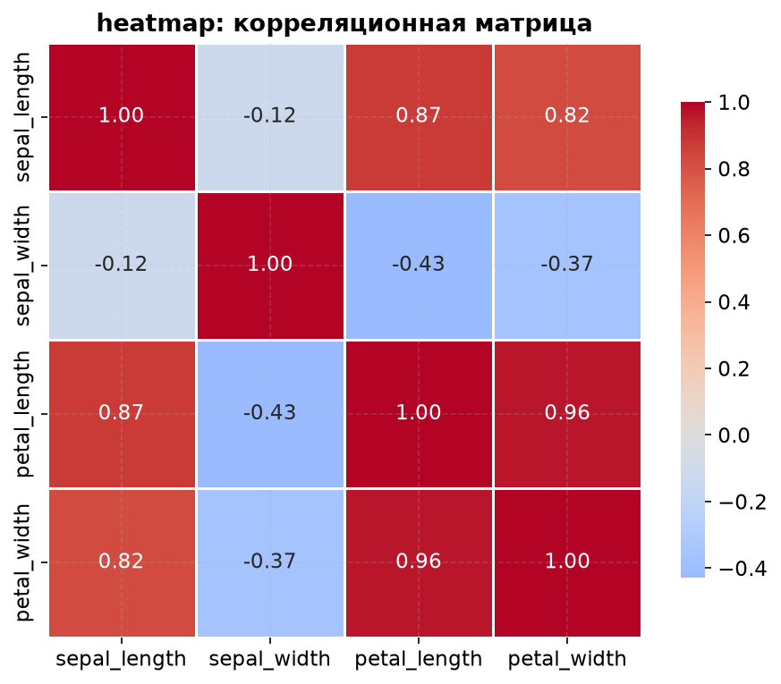
Строит тепловую карту и автоматически группирует схожие строки и столбцы с помощью иерархической кластеризации. По краям появляются дендрограммы.
sns.clustermap(
data=df_pivot,
cmap="coolwarm",
center=0,
standard_scale=1, # нормировка по строкам (0) или столбцам (1)
# z_score=0, # альтернатива: z-нормировка
method="average", # метод кластеризации
metric="euclidean", # метрика расстояния
linewidths=0.4,
dendrogram_ratio=0.14,
figsize=(8, 6)
)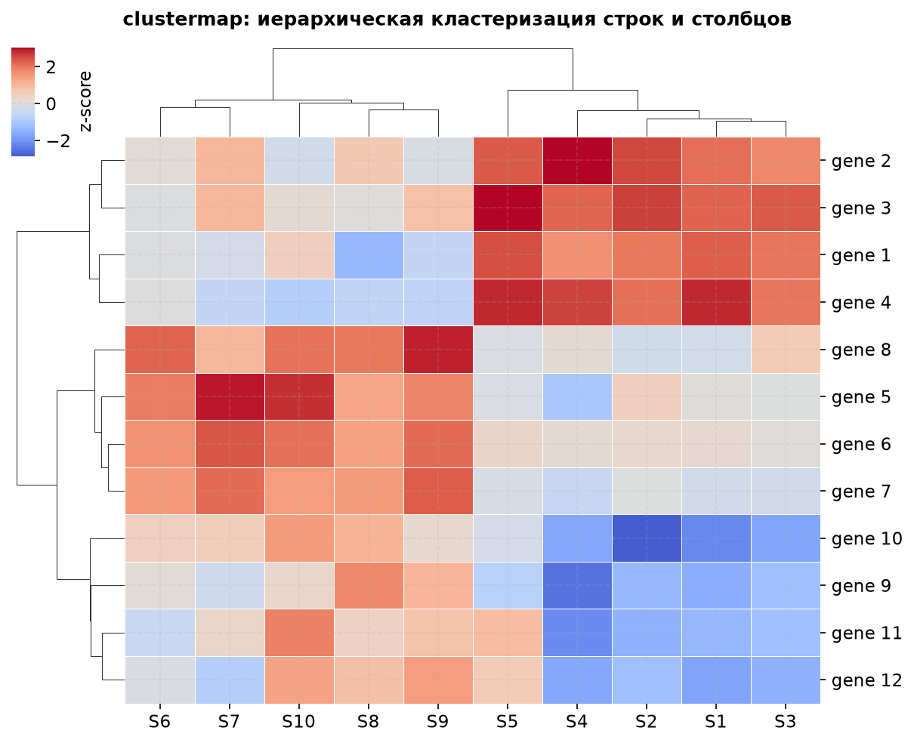
clustermap: строки и столбцы переставлены так, чтобы похожие элементы оказались рядом. Дендрограммы показывают структуру кластеров.| Параметр | Что делает |
|---|---|
annot | True — подписать значения в ячейках. Можно передать свою матрицу подписей. |
fmt | Формат чисел: ".2f", ".1%", "d". |
cmap | Палитра: "coolwarm", "viridis", "rocket", "mako". |
center | Значение, относительно которого строится расходящаяся палитра. Для корреляций — 0. |
vmin, vmax | Границы цветовой шкалы. Полезно, чтобы сравнить несколько heatmap в одном масштабе. |
linewidths | Толщина линий между ячейками. |
cbar, cbar_kws | Показывать ли цветовую шкалу и как её настроить. |
mask | Булева маска: True — ячейка не рисуется. Удобно скрыть верхний треугольник корреляционной матрицы. |
standard_scale | Нормировка в clustermap: 0 — по строкам, 1 — по столбцам. |
z_score | Z-нормировка строк (0) или столбцов (1): вычитание среднего и деление на стандартное отклонение. |
Коэффициент корреляции Пирсона r лежит от −1 до 1. Он измеряет только линейную связь: r ≈ 0 не означает, что связи нет — она может быть нелинейной.
RuntimeError: clustermap requires scipy to be available, установите пакет: pip install scipy.
| Задача | График | Функция |
|---|---|---|
| Связь двух числовых переменных | Scatter / 2D KDE | scatterplot, kdeplot, jointplot |
| Распределение одной числовой переменной | Histogram / KDE / Box / Violin | histplot, kdeplot, boxplot, violinplot |
| Сравнение числовой переменной по категориям | Box / Violin / Bar / Strip | boxplot, violinplot, barplot, stripplot |
| Количество наблюдений по категориям | Count plot | countplot |
| Пары числовых переменных | Pair matrix | pairplot, PairGrid |
| Матрица корреляций / сводная таблица | Heatmap / Clustermap | heatmap, clustermap |
| Один график в разных подгруппах | Facet grid | catplot, FacetGrid, displot |
# Глобальная тема: сетка, шрифты, фон
sns.set_theme(
style="whitegrid", # 'darkgrid', 'whitegrid', 'dark', 'white', 'ticks'
palette="Set2", # палитра по умолчанию
context="notebook", # 'paper', 'notebook', 'talk', 'poster'
font_scale=1.0
)
# Отдельная палитра
colors = sns.color_palette("husl", 8)
sns.color_palette("coolwarm", as_cmap=True) # непрерывная палитра
# Временный стиль для одного графика
with sns.axes_style("whitegrid"):
sns.boxplot(data=df, x="day", y="total_bill")data=: тогда x="total_bill" будет воспринято как строка, а не как имя колонки.s и size: s — абсолютный размер в точках², size — колонка, по которой размер кодируется.hue: легенда и цвета перестают читаться. Оставьте 5–7 групп или объедините редкие категории.bw_adjust: KDE начинает показывать шум вместо структуры.barplot как на распределение: столбец показывает агрегат (среднее), а не все точки. Для распределения используйте box/violin/strip.ci и scale: в новых версиях это устаревшие параметры, замените на errorbar и density_norm.g.savefig().plt.tight_layout(): подписи и легенды могут обрезаться, особенно при сохранении.sns.scatterplot или sns.histplot, затем добавляйте hue, style, size и фасеты. А если нужен нестандартный график — используйте axes-level функцию с ax= и донастраивайте её средствами Matplotlib.